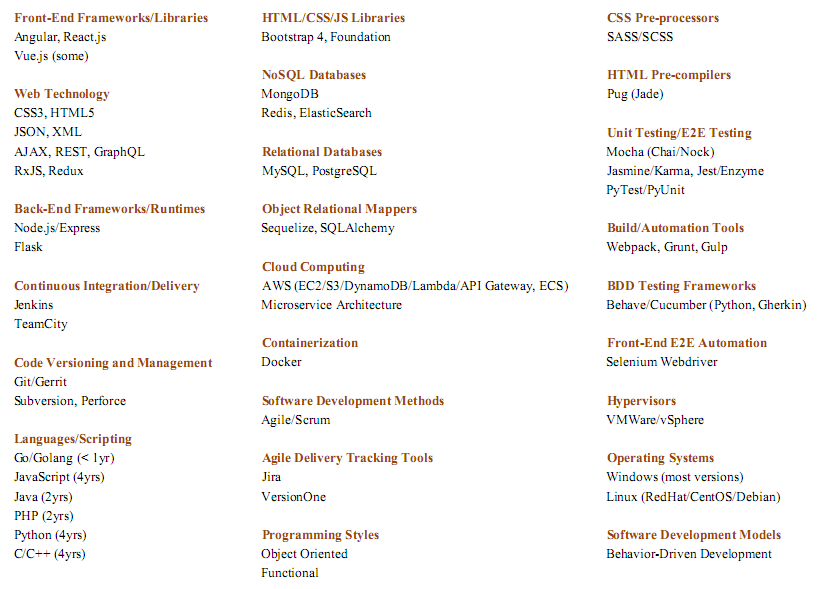

I am a full stack JavaScript developer with 10+ years of experience in software. Frontends built with Angular, React.js, JavaScript/TypeScript, NgRX, RxJS, Redux, RTK, React Query, Hooks. UI development with Bootstrap, Tailwind CSS. Testing with Jest, Cypress, Cucumber. Backends built with Node.js and Express. Experience with Git, Docker, cloud application architecture, microservice development, AWS, remote work culture, and collaborating with distributed teams communicating via Slack and Zoom.

UI/UX
-
Experience in working with the Bootstrap 4 CSS library and grid
layouts
-
Experience developing with SASS/SCSS CSS pre-processor
Front-End
-
Experience in developing modern web applications using the MEAN/MERN
stacks and Angular/RxJS and React.js/Redux technologies
Back-End
-
Experience in developing Node.js/Express applications
-
Experience building and interacting with RESTful services, GraphQL,
and JSON
Databases
-
Experience in working with the NoSQL databases such as MongoDB,
Redis, ElasticSearch, and DynamoDB
-
Experience in working with the RDBMS databases such as SQL,
PostgreSQL, and MySQL
Testing
-
Experience with Test-Driven Development using automated testing
frameworks such as Mocha (Chai/Nock), Karma, Jasmine, Jest/Enzyme
-
Experience working with BDD testing frameworks such as Python
Behave, Cucumber using Gherkin language
-
Experience working with Selenium webdriver for automating browser UI
tests
-
Experience writing modular and high-quality code with unit and
integration tests
Cloud Services
-
Experience in working with the cloud services in AWS
(EC2/S3/Lambda/API Gateway, ECS)
-
Experience in microservice architecture in cloud environments and
containerization (Docker)
DevOps
-
Experience ensuring code builds and deploys properly through
Continuous Integration/Continuous Deployment processes built in
TeamCity/Jenkins
-
Knowledge in best practices for the whole software development cycle
(TDD/CI/CD) and agile methodologies
General
-
6+ years in developing web applications
-
Experience with NPM and modular application development with tools
like Babel/Webpack, Grunt, and Gulp
-
Experience with using git-based distributed version control systems
in a collaborative environment (Git/Gerrit)
-
Experience working as part of a dynamic, interactive Agile team
developing and delivering digital services
-
Experience with Agile delivery tracking tools Jira and VersionOne
-
Familiarity object-oriented and functional programming styles
-
Experience with web application JavaScript frameworks and the latest
ECMAScript standards
-
Strong communication skills with a record of working and
collaborating with others
-
Experience working as part of a remote team
-
Ability to work quickly and efficiently in a team environment to
meet short deadlines
-
Able to manage and prioritize multiple tasks, with minimal
assistance and supervision, while remaining flexible to changing
requirements
-
Experience collaboratively working with QA teams to ensure timely
delivery of high-quality products
-
Experience assisting in training and mentoring less experienced
peers
React.js/Redux/React Query
HTML5, CSS, Tailwind, Bootstrap